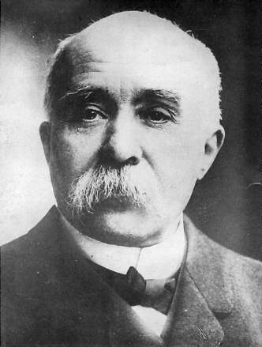

Georges Clemenceau (Klemanso) 1841-1929

Fransýz devlet adamý ve siyasetçisidir. Asýl mesleði doktorluk olmasýna raðmen bir politikacý olarak tanýnmýþtýr. Uzun yýllar siyasî faaliyetler içinde bulunmuþ ve baþbakanlýða kadar yükselmiþtir. Muhalefette iken Tunus'un iþgaline karþý çýkmýþ, baþbakanlýðý döneminde ise Fas iþgal edilmiþtir. 1917 yýlýnda Baþbakanlýða atanmýþ ve Birinci Dünya Savaþý sonrasýnda Barýþ Konferansý Baþkanlýðýna getirilmiþtir.Clemenceau, 1841 yýlýnda Vendee'nin Mevilleron-en-Pareds kasabasýnda doðdu. 1852 yýlýnda Nantes'da bir liseye baþladý. Önceleri aile mesleði olan doktorluða ilgi duydu. Babasý Benjamin doktor olup oðlunun da doktorluk eðitimini görmesini istiyordu. Bu konuda babasýndan ilk bilgileri aldý. Yaz tatillerini de kasabadaki evlerinde ve babasýnýn kitaplarýný okuyarak geçirdi. Bilime meraklý olup, felsefe ve tarih bilgisini arttýrmaya çalýþtý.
Clemenceau, 1860 yýlýnda babasý tarafýndan týp öðrenimi görmesi için Paris'e götürüldü. Paris'teki Latin Mahallesine yerleþti ve Paris Üniversitesinde okumaya baþladý. Bir taraftan öðrenimini sürdürürken, diðer taraftan toplumsal olaylarla yakýndan ilgilendi. Siyasi faaliyetler yürüten örgütlerle temas kurarak aralarýna katýldý. Bu arada yazý yazmaya da baþladý. 1862 yýlý sonunda Emile Zola ve Pierre Denis gibi ünlülerin bulunduðu bir gurupla "Le Travail" adlý dergiyi yayýmlamaya baþladý. Dergi on beþ günde bir yayýmlandý. Burada daha çok edebiyat ve sanat ile ilgili yazýlar yazdý. Dergide, Ýmparatorluk yönetimine karþý yazýlarýn yayýnlanmasý, 1848 devriminin yýldönümünde, iþçilerin devrimi kutlamaya davet edilmeleri üzerine kapatýldý ve kendisi de tutuklanarak hapse konuldu.
73 gün hapis yatan Clemenceau, bir süre dinlendikten sonra tekrar Paris'e döndü. Le Matin adlý dergiyi yayýnladý; ancak, bu derginin de ömrü uzun olmadý ve dokuzuncu sayýsýndan sonra, cumhuriyet taraftarý yayýnlarýndan dolayý kapatýldý. 1865 yýlýnda okulundan mezun oldu. Kýsa bir süre sonra Londra'ya ve oradan da New York'a gitti. Burada doktorluk mesleðini icra etmekten çok, toplumsal hareketlerle ilgilendi. Dernek ve siyasi kurumlara girip çýktý, tartýþmalarýna katýldý. Buradaki izlenimlerini aktardýðý makalelerini Paris'teki Temps'a göndermek suretiyle yayýmladý. New York yakýnlarýnda bulunan Stamford kasabasýnda bulunan bir kýz okulunda Fransýz edebiyatý derslerini verdi. 1869 yýlýnda öðrencilerinden biriyle evlendi. Bu evlilikten üç çocuðu oldu. Evliliði uzun sürmedi ve yedi yýl sonra eþinden ayrýldý.
1870 yýlýnda Paris'e dönen Clemenceau, Montmartre'da doktorluk yaptý. Ancak, burada uzun süre kalamadý. Paris'te cereyan eden siyasi ve toplumsal hareketliliðe uzak duramadý. Paris'e gelerek iþçilerin yoðunlukta bulunduðu semte yerleþti. Bu arada Ýmparatorluk için sýkýntýlý günler yaþanmakta, birliðini tamamlayan Prusya ile sürdürülen mücadele devleti giderek zor duruma sokmaktaydý. 1870 yýlýnda Almanlarla yapýlan savaþ da aðýr bir yenilgi ve önemli toprak kaybýyla neticelendi.
Clemenceau, 1870 yýlýnda Montmartre Belediye Baþkanlýðýna seçildi. Bir yýl sonra da buradan aldýðý oylarla milletvekili seçilerek meclise girdi. Ayný yýlda Paris Belediye Meclisine seçildi. 1875 yýlýnda da Paris Belediye Baþkanlýðýna getirildi. Bir yýl sonra yapýlan seçimlerde tekrar seçilince milletvekilliðini devam ettirdi. 1877 seçimleri Cumhuriyetçilerin ezici çoðunluðu elde etmesiyle sonuçlandý. Kendisi milletvekili seçildiði gibi radikal ve aþýrý sol grubun da önderliðini ele geçirdi. Ayný yýl içinde hükümetin düþürülmesinde etkin rol üstlendi.
1881 ve 1885 seçimlerinde de seçilen Clemenceau, milletvekilliðini sürdürdü. 1892 yýlýnda Panama Kanalý Þirketinin iflas etmesi, iflas neticesi açýlan soruþturma ve ortaya çýkan yolsuzluklara adýnýn karýþmasý, bir yýl sonra yapýlan seçimleri kaybetmesiyle sonuçlandý. Milletvekili seçilemeyince de gazetecilik yapmaya baþladý. Bu arada bir çok kitap yazarak bunlarý neþretti. 1894 yýlýnda, Fransa ordusunda yüzbaþý olarak görev yapan Alfred Dreyfus olayý patlak verdi. Dreyfus askeri sýrlarý Almanya'ya satmakla suçlanarak mahkemeye verildi. Suçlu bulunarak ömür boyu hapse mahkum edildiyse de, 1906 yýlýnda yargýlandýðý sivil mahkemede aklanarak ordudaki görevine iade edildi. Clemenceau, Dreyfus olayýnda suçlanan taraftan yana tavýr koydu. Baþyazarlýðýný yaptýðý L'Aurore gazetesinde yayýnladýðý makalelerinde siyasi otoritenin tavrýna karþý çýktý. Bir süre daha gazetecilik hayatýný sürdürdükten sonra 1902 yýlýnda senatörlüðe seçildi. 1906 yýlýnda Ýçiþleri Bakanlýðýna, altý ay sonra hükümet istifa edince de Baþbakanlýða atandý. 1881 yýlýnda Tunus'un iþgaline karþý aleyhte oy kullanan tek milletvekili olmasýna raðmen, Baþbakanlýðý döneminde Fas'ýn iþgaline onay verdi. 1907 yýlýnda Fransa Fas'a karþý askeri müdahalede bulundu. Ýþgale gerekçe olarak da Fransýz vatandaþlarýna yönelik saldýrýlar gösterildi. Bir zamanlarýn hýzlý sömürge karþýtý olan, bakanlarý deviren Clemenceau, bu sýrada ise Fransa'nýn sömürgecilik çýkarlarýna önderlik etti. Gösterilen tepkilere ise aldýrmadý.
Clemenceau, baþbakanlýðý döneminde ülkede meydana gelen olaylara karþý çok sert davrandý. Ülkede çýkan genel grevler sýrasýnda, önce grev kýrýcý faaliyetlere giriþti, iþverenlerden yana tavýr takýndý. Maden iþçilerine karþý askeri birlikler kullandýðý gibi, daha sonra meydana gelen köylü ayaklanmalarýnda da ayný yola baþvurarak eylemi bastýrma yoluna gitti. Çýkan çatýþmalarda çok sayýda insan hayatýný kaybetti. Baþýnda bulunduðu hükümetin Meclisten güven oyu alamamasý üzerine 1909 yýlýnda istifa etti.
1911 yýlýnda yapýlan seçimlerde yeniden seçilerek senatoya girdi. Muhalefette bulunduðu süre zarfýnda Alman tehlikesine dikkat çekti. Bu arada L'Homme Libre adlý dergiyi neþretmeye baþladý. 1917 yýlýnda baþta bulunan hükümetin düþmesi üzerine Baþbakanlýða getirildi. Birinci Dünya Savaþý'nýn bu kritik yýllarýnda Fransa'yý yönetti. Savaþ sonrasýnda oluþturulan Barýþ Konferansýnýn Baþkanlýðýna getirildi.
Clemenceau, gerek Almanlar, gerek Osmanlý Devleti ile yapýlan ve oldukça aðýr þartlar ihtiva eden anlaþmalarýn imzalattýrýlmasýnda etkili olan isimlerin baþýnda yer aldý. Almanlar, imzalanan Versailles Antlaþmasýyla savaþ tazminatý ödemek zorunda býrakýldý. Sebep olduklarý zararlarý Almanlarýn ödemesi gerektiðini savunarak bu konuda Wilson ve Lloyd George ile anlaþmazlýða düþtü.
Paris barýþ görüþmeleri sýrasýndan Osmanlý heyetine karþý son derece kötü davranarak haksýz ithamlarda bulundu. Görüþmelerle ilgili hatýralarýný anlatan Cemil Topuzlu; "Dünya siyaset tarihinde, þimdiye kadar bir hey'et-i murahhasaya (delegeye) bu tarzda muamele yapýldýðý görülmemiþtir" demek suretiyle kendilerine yapýlan muameleye tepki gösterdiklerini, "Biz buraya haps olunmaya mý geldik, yoksa sulh konferansýnda bulunmaya mý?" þeklinde hatýralarýný aktarmaktadýr. Clemenseau'nun Osmanlý heyetine karþý þu sözleri sarfettiði de aktarýlmaktadýr:
"Efendiler! Siz harbe sebepsiz girdiniz. Çanakkale'yi yýllarca kapattýnýz. Savaþýn dört sene uzamasýna, milyonlarca insanýn ölümüne sebebiyet verdiniz!.. Bundan dolayý bugün size teklif etmekte olduðumuz antlaþma þartlarý çok aðýrdýr. Ýçindeki maddeleri asla müzakere ve kat'iyyen münakaþa etmeyeceðiz! Onlarýn bir kelimesini bile deðiþtirmeyeceðiz!.. Kül halinde ve aynen -birkaç gün içinde tetkik ettikten sonra- kabul eylemenizi istiyoruz!" (http://www.ozbelgeler.com/harman/harman20.htm)
"Katil miras alamaz" meâlindeki hadis-i þerifi izah eden Bediüzzaman, bunun þeriatýn adil düsturu olduðunu ifade ederek, "… þeriat-ý fýtriye olan kavanin-i kadere muntabýktýr ki, tarik-i gayr-ý meþrû ile bir maksadý takip eden, maksudunun zýddýyla ceza görüyor" dedikten sonra örnek olarak da Wilson, Klemanso, Venizelos'u gösterir. (Ýçtimai Reçeteler-I, Tenvir Neþriyat, Ýstanbul 1990, s. 197). Þan ve þöhret için her yolu mubah görüp, her vasýtaya baþvuranlar, muvakkaten bir þöhret elde etseler bilen sonrasýnýn elim bir sukut olacaðý tespiti yapýlmaktadýr.
Ýzmir'in Yunanlýlar tarafýndan iþgal edilmesinde de büyük pay sahibi olan Clemenseau, Venizelos'un isteklerini geri çevirmemiþtir. 14 Mayýs 1919 yýlýnda masa baþýnda verilen karardan bir gün sonra Ýzmir Yunanlýlar tarafýndan iþgal edildi. Birinci Dünya Savaþýnýn galip devletleri kendi aralarýnda yaptýklarý anlaþmalarla iþgal giriþimlerini devam ettirdiler. Zor kullanmak suretiyle milletleri esaret altýna alabileceklerini sandýlar. Vatanlarýný korumak için Kurtuluþ Savaþý'ný baþlatan kahraman millet esarete izin vermeyerek planlarý akim býraktý. Böylece Clemenseau, amacýna ulaþamadý. Birçok katliam yapýlmasýna raðmen, milletimizin esaret altýna alýnamayacaðý bir kez daha gösterilmiþ oldu.
Savaþ sonrasýnda maðlup devletlere her türlü baskýyý yapan, Fransa'nýn emelleri için her yolu deneyen Clemenceau, 1919 yýlýnda cumhurbaþkanlýðýna aday oldu. ancak, seçimi kazanamadý. Baþbakanlýðý da býrakarak siyasi hayattan tamamen çekildi. 1929 yýlýnda Paris'te öldü.